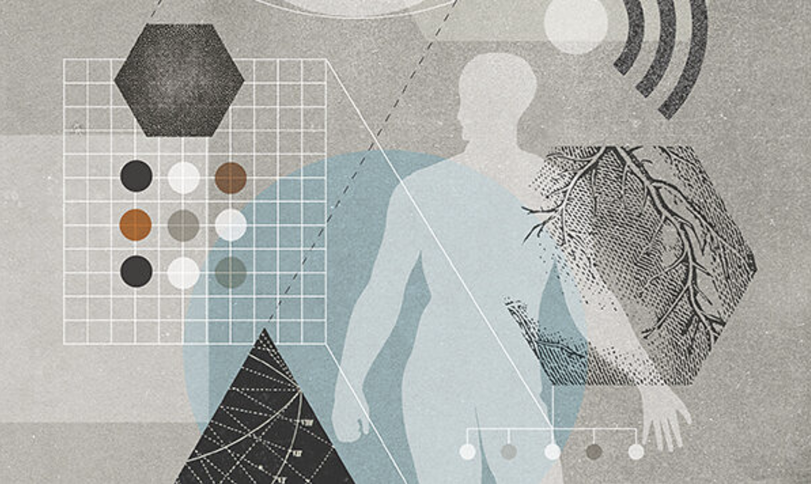
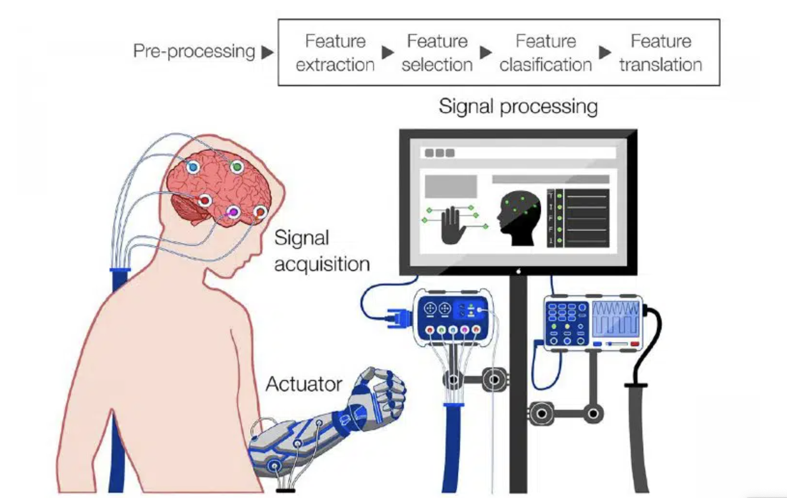

Internet Of Bodies May Lead To Internet Of Brains by 2050
The Internet of Bodies and the coming Internet of Brains fall specifically under the category of “human augmentation technologies,” which refer to technologies that enhance human capabilities, either physically or cognitively.
According to the report, the technological applications most associated with human augmentation include:
- Wearable devices and implants for tracking and analyzing physiological and environmental data (e.g., biochips and implantable sensors). These technologies aim to achieve real-time continuous monitoring of physiological data to understand human health conditions and performance.
- Sensory augmentation technologies, such as hearing and retinal implants, designed to improve or augment sensory activities, particularly vision and hearing. Smart prosthetics, including exoskeletons, are also part of this category, enhancing physical capabilities such as mobility, strength, and endurance.
- Brain-computer or brain-to-brain interfaces that establish direct communication between human brains and/or computers.
Elon Musk's Neuralink is a notable example of a brain-computer interface that gained attention for helping a paralyzed man. However, the bigger question remains: what happens when human augmentation moves from healing to enhancement?
Transhumanism may offer superhuman abilities, but there's concern that such abilities may be reserved for a select elite, while others remain under surveillance and control, potentially making much of humanity obsolete.
Read the full article here
“Internet Of Bodies” - Turning the Body Into a Wire - Transhumanism & Nano-tech

This is the technical continuation of the fascist, transhumanist, technocratic movement, melding physical with digital.
Each "Internet of Bodies" device is an incremental invasion of our physical selves, and each vaccine is an upgrade for
the body to receive more nano-tech bioengineering particles, designed to slowly re-engineer humanity from the inside out.
This is technology catching up with their control matrix plans, sold to the masses as something we need and want. This
assumption—that these advancements should be meddled with in such a casually murderous way—is being criticized heavily by
some experts in the field.
Here are more interesting links below that explore some of the scientific advancements and criticism surrounding this
reality:
Psinergy Source
Nano-Cyber Brain Machine Interface - Bleak Cyborg Future

As the availability of these platforms increases past medical treatment, disparities in access to these technologies may exacerbate existing social inequalities. For example, eBCIs can be used for cognitive enhancement and cause extreme imbalances in academic or professional successes and educational advancements.
“This bleak panorama brings forth an interesting dilemma about the role of policymakers in BCI commercialization,” Green said. “Should regulatory bodies intervene to prevent misuse and unequal access to neurotech? Should society follow instead the path taken by previous innovations, such as the internet or the smartphone, which originally targeted niche markets but are now commercialized on a global scale?”
Here are more interesting links below that explore some of the scientific advancements and criticism surrounding this
reality:
Learn more.
Sensor Networks Wban Blockchain
Wireless Body Area Networks (WBANs) are special purpose Wireless Sensor Networks, which is used to provide competent communication solutions for health care and medicinal applications. The rapid technological advancements in the field of sensors, MEMS, and the wireless communication enable the design and implementation of Wireless Body Area Networks. The most prominent application of WBANs is in healthcare but it also finds its applications in consumer electronics, sports safety, lifestyle, defense, and much more. WBANs are usually smaller networks when compared to WSNs but still, they are vulnerable to a massive number of security attacks. In this paper, we provide an overview of the Wireless Body Area Networks (WBANs), its applications, and security aspects.
Various security threats and their countermeasures in WBANs are discussed based on the latest reviews and publications.
Here are more interesting links below that explore some of the scientific advancements and criticism surrounding this
reality:
Learn more.